स्कन्ध 11 · अध्याय 7
श्लोक १
श्रीभगवानुवाच–
यदात्थ मां महाभाग तच्चिकीर्षितमेव मे ।
ब्रह्मा भवो लोकपालाः सर्वे मामभिकाङ्क्षिणः।। १ ।।
यदात्थ मां महाभाग तच्चिकीर्षितमेव मे ।
ब्रह्मा भवो लोकपालाः सर्वे मामभिकाङ्क्षिणः।। १ ।।
श्लोक २
मया निष्पादितं ह्यत्र देवकार्यमशेषतः ।
यदर्थमवतीर्णोऽहमंशेन ब्रह्मणाऽर्थितः।। २ ।।
यदर्थमवतीर्णोऽहमंशेन ब्रह्मणाऽर्थितः।। २ ।।
श्लोक ३
कुलं वै शापनिर्दग्धं नयत्यन्योन्यविग्रहात् ।
समुद्रः सप्तमे ह्येनां पुरीं च प्लावयिष्यति ।। ३ ।।
समुद्रः सप्तमे ह्येनां पुरीं च प्लावयिष्यति ।। ३ ।।
श्लोक ४
यर्ह्येवायं मया त्यक्तो लोकोऽयं नष्टमङ्गलः ।
भविष्यत्यचिरात् साधो कलिनाऽपि निराकृतः ।। ४ ।।
भविष्यत्यचिरात् साधो कलिनाऽपि निराकृतः ।। ४ ।।
श्लोक ५
न वस्तव्यं त्वयैवेह मया त्यक्ते महीतले ।
जनोऽधर्मरुचिर्भद्र भविष्यति कलौ युगे ।। ५ ।।
जनोऽधर्मरुचिर्भद्र भविष्यति कलौ युगे ।। ५ ।।
श्लोक ६
त्वं तु सर्वं परित्यज्य स्नेहं स्वजनबन्धनम् ।
मय्यावेश्य मनः सम्यक् समदृग् विचरस्व गाम् ।। ६ ।।
मय्यावेश्य मनः सम्यक् समदृग् विचरस्व गाम् ।। ६ ।।
श्लोक ७
यदिदं मनसा वाचा चक्षुर्भ्यां श्रवणादिभिः ।
नश्वरं गृह्यमाणं च विद्धि मायां मनोमयीम् ।। ७ ।।
नश्वरं गृह्यमाणं च विद्धि मायां मनोमयीम् ।। ७ ।।
भागवततात्पर्यनिर्णय
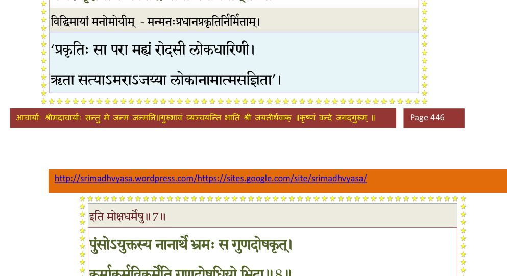
श्लोक ८
पुंसोऽयुक्तस्य नानार्थे भ्रमः स गुणदोषकृत् ।
कर्माकर्मविकर्मेति गुणदोषधियो(धिया) भिदा ।। ८ ।।
कर्माकर्मविकर्मेति गुणदोषधियो(धिया) भिदा ।। ८ ।।
श्लोक ९
तस्माद् युक्तेन्द्रियग्रामो युक्तचित्त इदं जगत् ।
आत्मनीक्षस्व विततमात्मानं मय्यधीश्वरे ।। ९ ।।
आत्मनीक्षस्व विततमात्मानं मय्यधीश्वरे ।। ९ ।।
भागवततात्पर्यनिर्णय
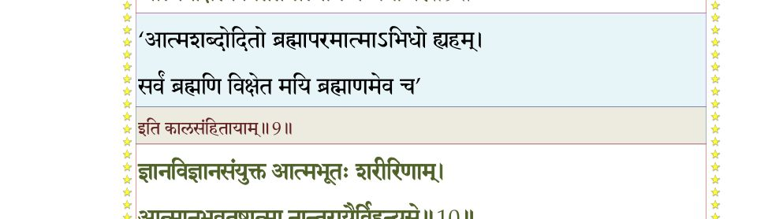
श्लोक १०
ज्ञानविज्ञानसंयुक्त आत्मभूतः शरीरिणाम् ।
आत्मानुभवतुष्टात्मा नान्तरायैर्विहन्यते ।। १० ।।
आत्मानुभवतुष्टात्मा नान्तरायैर्विहन्यते ।। १० ।।
भागवततात्पर्यनिर्णय
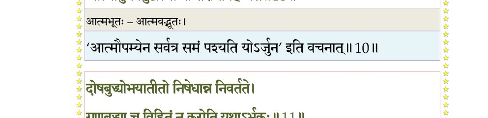
श्लोक ११
दोषबुद्ध्योभयातीतो निषेधान्न निवर्तते ।
गुणबुद्ध्या च विहितं न करोति यथाऽर्भकः ।। ११ ।।
गुणबुद्ध्या च विहितं न करोति यथाऽर्भकः ।। ११ ।।
भागवततात्पर्यनिर्णय
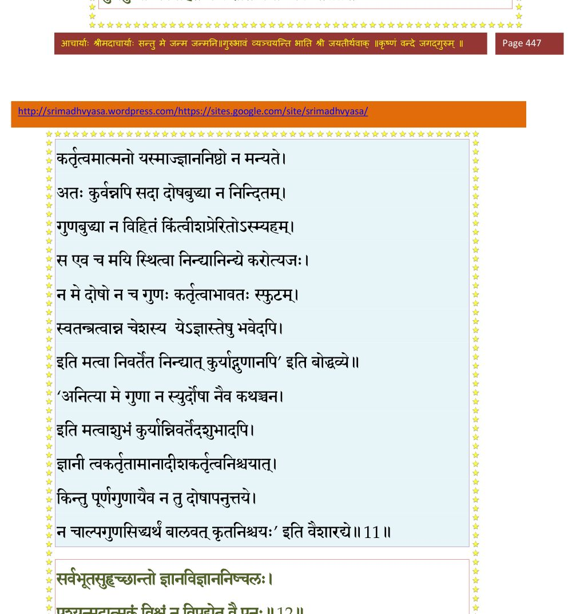
श्लोक १२
सर्वभूतसुहृच्छान्तो ज्ञानविज्ञाननिश्चलः ।
पश्यन् मदात्मकं विश्वं न विपद्येत वै पुनः ।। १२ ।।
पश्यन् मदात्मकं विश्वं न विपद्येत वै पुनः ।। १२ ।।
भागवततात्पर्यनिर्णय
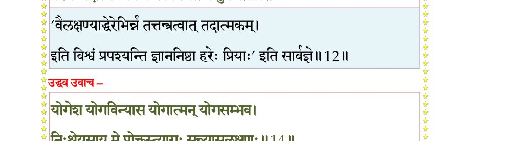
श्लोक १३
श्रीशुक उवाच–
इत्यादिष्टो भगवता महाभागवतो नृप ।
उद्धवः प्रणिपत्याह तत्वजिज्ञासुरच्युतम् ।। १३ ।।
इत्यादिष्टो भगवता महाभागवतो नृप ।
उद्धवः प्रणिपत्याह तत्वजिज्ञासुरच्युतम् ।। १३ ।।
श्लोक १४
उद्धव उवाच–
योगेश योगविन्यास योगात्मन् योगसम्भव ।
निःश्रेयसाय मे प्रोक्तस्त्यागः सन्न्यासलक्षणः।। १४ ।।
योगेश योगविन्यास योगात्मन् योगसम्भव ।
निःश्रेयसाय मे प्रोक्तस्त्यागः सन्न्यासलक्षणः।। १४ ।।
भागवततात्पर्यनिर्णय
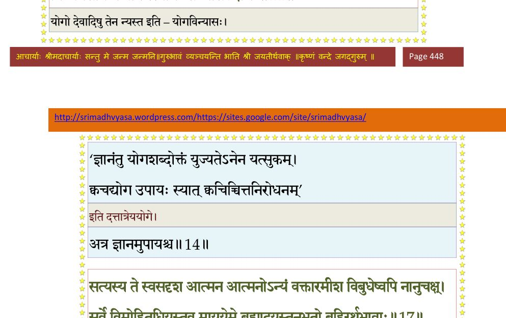
श्लोक १५
त्यागोऽयं दुष्करो भूमन् कामानां विषयात्मभिः ।
सुतरां त्वयि सर्वात्मन्नभक्तैरिति मे मतिः।। १५ ।।
सुतरां त्वयि सर्वात्मन्नभक्तैरिति मे मतिः।। १५ ।।
श्लोक १६
सोऽहं ममाहमिति मूढमतिर्विगाढ-
स्त्वन्मायया विरचितात्मनि सानुबन्धे ।
तत्त्वञ्जसा निगदितं भवता यथाऽहं
संसाधयामि भगवन्ननुशाधि भृत्यम्।। १६ ।।
स्त्वन्मायया विरचितात्मनि सानुबन्धे ।
तत्त्वञ्जसा निगदितं भवता यथाऽहं
संसाधयामि भगवन्ननुशाधि भृत्यम्।। १६ ।।
श्लोक १७
सत्यस्य ते स्वदृश आत्मन आत्मनोऽन्यं
वक्तारमीश विबुधेष्वपि नानुचक्षे ।
सर्वे विमोहितधियस्तव माययेमे
ब्रह्मादयस्तनुभृतो बहिरर्थभावाः ।। १७ ।।
वक्तारमीश विबुधेष्वपि नानुचक्षे ।
सर्वे विमोहितधियस्तव माययेमे
ब्रह्मादयस्तनुभृतो बहिरर्थभावाः ।। १७ ।।
भागवततात्पर्यनिर्णय
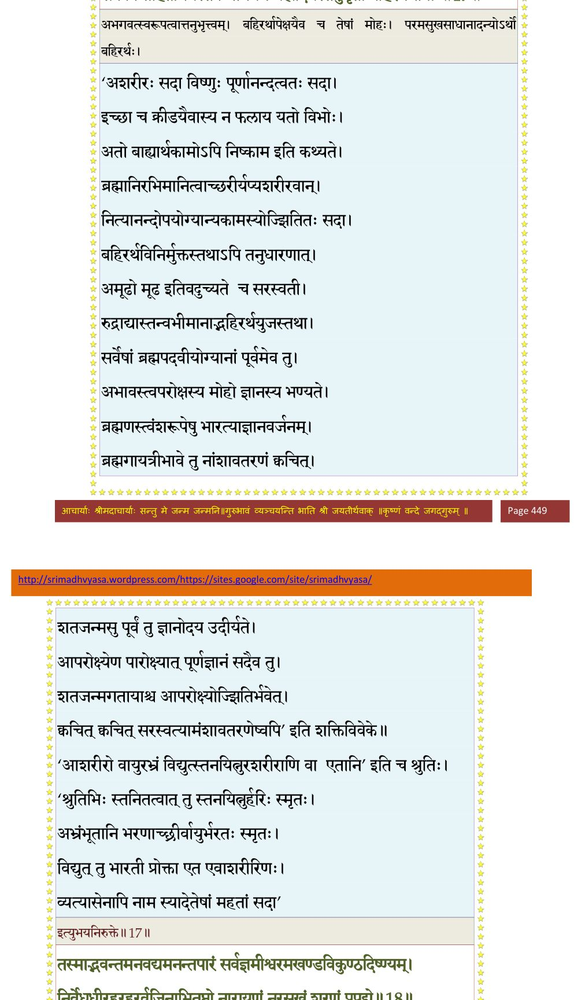
श्लोक १८
तस्माद् भवन्तमनवद्यमनन्तपारं सर्वज्ञमीश्वरमखण्डविकुण्ठधिष्ण्यम् ।
निर्वेदधीरहरहर्वृजिनाभितप्तो नारायणं नरसखं शरणं प्रपद्ये ।। १८ ।।
निर्वेदधीरहरहर्वृजिनाभितप्तो नारायणं नरसखं शरणं प्रपद्ये ।। १८ ।।
भागवततात्पर्यनिर्णय
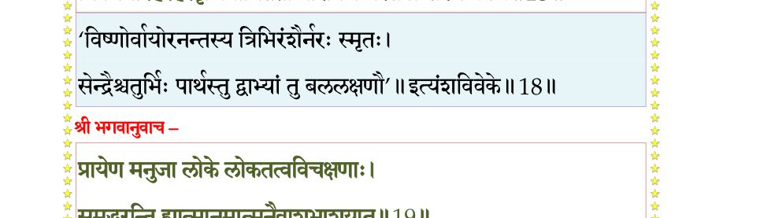
श्लोक १९
श्री भगवानुवाच–
प्रायेण मनुजा लोके लोकतत्वविचक्षणाः ।
समुद्धरन्ति ह्यात्मानमात्मनैवाशुभाशयात्।। १९ ।।
प्रायेण मनुजा लोके लोकतत्वविचक्षणाः ।
समुद्धरन्ति ह्यात्मानमात्मनैवाशुभाशयात्।। १९ ।।
भागवततात्पर्यनिर्णय
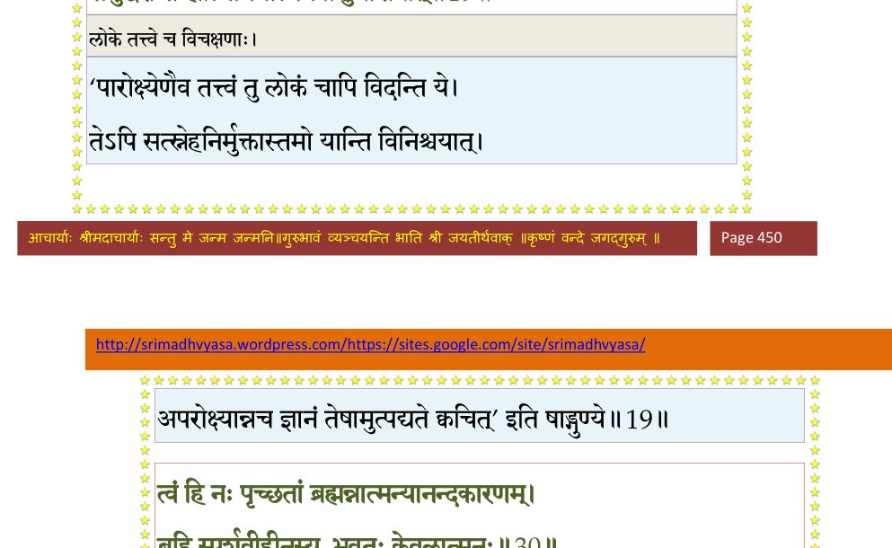
श्लोक २०
आत्मनो गुरुरात्मैव पुरुषस्य विशेषतः ।
यत् प्रत्यक्षानुमानाभ्यां श्रेयोऽसावनुविन्दते।। २० ।।
यत् प्रत्यक्षानुमानाभ्यां श्रेयोऽसावनुविन्दते।। २० ।।
श्लोक २१
पुरुषत्वे च मां धीराः सांख्ययोगविशारदाः ।
आविस्तारं प्रपश्यन्ति सर्वशक्त्युपबृंहितम्।। २१ ।।
आविस्तारं प्रपश्यन्ति सर्वशक्त्युपबृंहितम्।। २१ ।।
श्लोक २२
एकद्वित्रिचतुष्पादो बहुपादस्तथाऽपदः ।
बह्व्यः सन्ति पुरः सृष्टास्तासां मे पौरुषी प्रिया।। २२ ।।
बह्व्यः सन्ति पुरः सृष्टास्तासां मे पौरुषी प्रिया।। २२ ।।
श्लोक २३
अत्र मां मार्गयन्त्यद्धा युक्ता हेतुभिरीश्वरम् ।
गृह्यमाणैरात्मलिङ्गैः (स्वबाह्य) अग्राह्य मनुमानतः।।२३।।
गृह्यमाणैरात्मलिङ्गैः (स्वबाह्य) अग्राह्य मनुमानतः।।२३।।
श्लोक २४
अत्राप्युदाहरन्तीममितिहासं पुरातनम् ।
अवधूतस्य संवादं यदोरमिततेजसः ।। २४ ।।
अवधूतस्य संवादं यदोरमिततेजसः ।। २४ ।।
श्लोक २५
अवधूतं द्विजं कञ्चिच्चरन्तमकुतोभयम् ।
कविं निरीक्ष्य निपुणं यदुः पप्रच्छ धर्मवित्।। २५ ।।
कविं निरीक्ष्य निपुणं यदुः पप्रच्छ धर्मवित्।। २५ ।।
श्लोक २६
कुतो बुद्धिरियं ब्रह्मन्नकर्तुस्ते विशारदा ।
यामासाद्य भवान् लोकान् विद्वांश्चरति बालवत्।। २६ ।।
यामासाद्य भवान् लोकान् विद्वांश्चरति बालवत्।। २६ ।।
श्लोक २७
प्रायो धर्मार्थकामेषु विवित्सायां च मानवाः ।
हेतुनैव समीहन्ते आयुषो यशसः श्रियः।। २७ ।।
हेतुनैव समीहन्ते आयुषो यशसः श्रियः।। २७ ।।
श्लोक २८
त्वं तु कल्पः (कल्यः) कविर्दक्षः सुभगोऽमृतभाषणः ।
न कर्तुमीहसे किञ्चिज्जडोन्मत्तपिशाचवत्।। २८ ।।
न कर्तुमीहसे किञ्चिज्जडोन्मत्तपिशाचवत्।। २८ ।।
श्लोक २९
जनेषु दह्यमानेषु कामलोभदवाग्निना ।
न तप्यसेऽग्निना मुक्तो गङ्गाम्भस्थ इव द्विपः।। २९ ।।
न तप्यसेऽग्निना मुक्तो गङ्गाम्भस्थ इव द्विपः।। २९ ।।
श्लोक ३०
त्वं हि नः पृच्छतां ब्रह्मन्नात्मन्यानन्दकारणम् ।
ब्रूहि स्पर्शविहीनस्य भवतः केवलात्मनः।। ३० ।।
ब्रूहि स्पर्शविहीनस्य भवतः केवलात्मनः।। ३० ।।
भागवततात्पर्यनिर्णय
श्लोक ३१
श्री भगवानुवाच–
यदुनैवं महाभागो ब्रह्मण्येन सुमेधसा ।
पृष्टः सभाजितः प्राह प्रश्रयावनतं द्विजः।। ३१ ।।
यदुनैवं महाभागो ब्रह्मण्येन सुमेधसा ।
पृष्टः सभाजितः प्राह प्रश्रयावनतं द्विजः।। ३१ ।।
श्लोक ३२
ब्राह्मण उवाच–
सन्ति मे गुरवो राजन् बहवो बुद्ध्युपाश्रिताः ।
यतो बद्धिमुपादाय मुक्तोऽटामीह तान् शृणु।। ३२ ।।
सन्ति मे गुरवो राजन् बहवो बुद्ध्युपाश्रिताः ।
यतो बद्धिमुपादाय मुक्तोऽटामीह तान् शृणु।। ३२ ।।
श्लोक ३३
पृथिवी वायुराकाश आपोऽग्निश्चन्द्रमा रविः ।
कपोतोऽजगरः सिन्धुः पतङ्गो मधुकृद् गजः।। ३३ ।।
कपोतोऽजगरः सिन्धुः पतङ्गो मधुकृद् गजः।। ३३ ।।
श्लोक ३४
मधुहा हरिणो मीनः पिङ्गला कुररोऽर्भकः ।
कुमारी शरकृत् सर्प ऊर्णनाभिः सुपेशकृत्।। ३४ ।।
कुमारी शरकृत् सर्प ऊर्णनाभिः सुपेशकृत्।। ३४ ।।
श्लोक ३५
एते मे गुरवो राजन् चतुर्विंशतिराश्रिताः ।
शिक्षावृत्तिभिरेतेषामन्वशिक्षमहं ततः।। ३५ ।।
शिक्षावृत्तिभिरेतेषामन्वशिक्षमहं ततः।। ३५ ।।
श्लोक ३६
यतो यदनुशिक्षामि यथा वा नाहुषात्मज ।
तत् तथा पुरुषव्याघ्र निबोध कथयामि ते।। ३६ ।।
तत् तथा पुरुषव्याघ्र निबोध कथयामि ते।। ३६ ।।
श्लोक ३७
भूतैराक्रम्यमाणोऽपि धीरो दैववशानुगैः ।
तद्विदान् न चलेन्मार्गादनुशिक्षन् क्षितेर्व्रतम्।। ३७ ।।
तद्विदान् न चलेन्मार्गादनुशिक्षन् क्षितेर्व्रतम्।। ३७ ।।
श्लोक ३८
शश्वत् परार्थसर्वेहां परार्थैकान्तसम्भवम् ।
साधुः शिक्षेत भूमेश्च अनुशिक्षं व्रतान्तरम्।। ३८ ।।
साधुः शिक्षेत भूमेश्च अनुशिक्षं व्रतान्तरम्।। ३८ ।।
भागवततात्पर्यनिर्णय
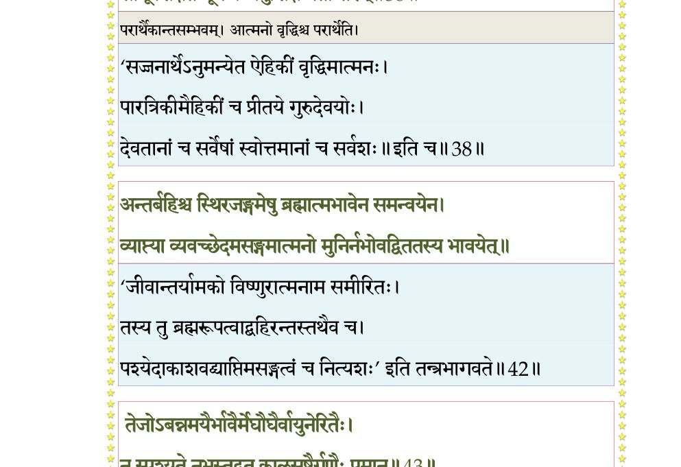
श्लोक ३९
प्राणवृत्त्यैव सन्तुष्यन् मुनिर्नैवेन्द्रियप्रियैः ।
ज्ञानं यथा न नश्येत नावकीर्येत वाङ्मनः।। ३९ ।।
ज्ञानं यथा न नश्येत नावकीर्येत वाङ्मनः।। ३९ ।।
श्लोक ४०
विषयेष्वाविशन् योगी नानाधर्मेषु सर्वतः ।
गुणदोषान्वयेनात्मा न विषज्जेत वायुवत्।। ४० ।।
गुणदोषान्वयेनात्मा न विषज्जेत वायुवत्।। ४० ।।
श्लोक ४१
पार्थिवेष्विह देहेषु प्रविष्टस्तद्गुणाश्रयः ।
गुणैर्न युज्यते योगी गन्धैर्वायुरिवात्मदृक्।। ४१ ।।
गुणैर्न युज्यते योगी गन्धैर्वायुरिवात्मदृक्।। ४१ ।।
श्लोक ४२
अन्तर्बहिश्च स्थिरजङ्गमेषु ब्रह्मात्मभावेन समन्वयेन ।
व्याप्त्याऽव्यवच्छेदमसङ्गमात्मनो मुनिर्नभोवद् विततस्य भावयेत्।।४२।।
व्याप्त्याऽव्यवच्छेदमसङ्गमात्मनो मुनिर्नभोवद् विततस्य भावयेत्।।४२।।
श्लोक ४३
तेजोऽबन्नमयैर्भावैर्मेघाद्यैर्वायुनेरितैः ।
न स्पृश्यते नभस्तद्वत् कालसृष्टैर्गुणैः पुमान्।। ४३ ।।
न स्पृश्यते नभस्तद्वत् कालसृष्टैर्गुणैः पुमान्।। ४३ ।।
भागवततात्पर्यनिर्णय
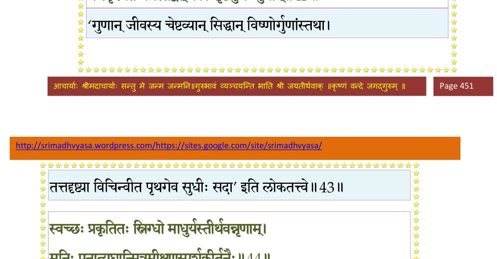
श्लोक ४४
स्वच्छः प्रकृतितः स्निग्धो माधुर्यस्तीर्थवन्नृणाम् ।
मुनिः पुनात्यघान्मित्रमीक्षणस्पर्शकीर्तनैः।। ४४ ।।
मुनिः पुनात्यघान्मित्रमीक्षणस्पर्शकीर्तनैः।। ४४ ।।
भागवततात्पर्यनिर्णय
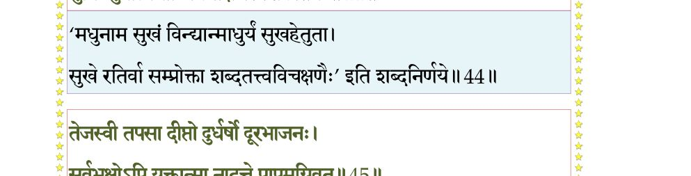
श्लोक ४५
तेजस्वी तपसा दीप्तो दुर्धर्षो दूरभाजनः ।
सर्वभक्षोऽपि युक्तात्मा नादत्ते पापमग्निवत् ।। ४५ ।।
सर्वभक्षोऽपि युक्तात्मा नादत्ते पापमग्निवत् ।। ४५ ।।
भागवततात्पर्यनिर्णय
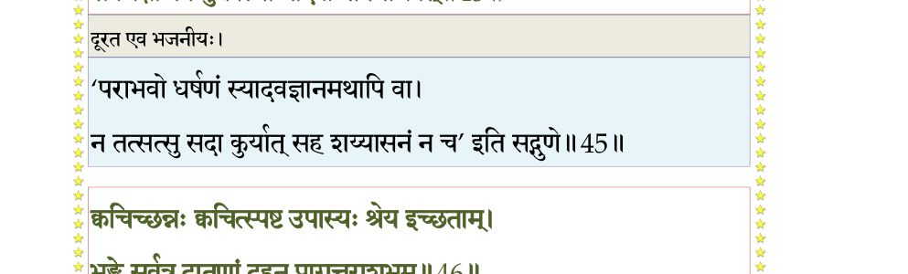
श्लोक ४६
क्वचिच्छन्नः क्वचित् स्पष्ट उपास्यः श्रेय इच्छताम् ।
भुङ्क्ते सर्वत्र दातॄणां दहन् प्रागुत्तराशुभम् ।। ४६ ।।
भुङ्क्ते सर्वत्र दातॄणां दहन् प्रागुत्तराशुभम् ।। ४६ ।।
भागवततात्पर्यनिर्णय
श्लोक ४७
स्वमायया सृष्टमिदं सदसल्लक्षणं विभुः ।
प्रविष्ट ईयते तत्तत्स्व(स)रूपोऽग्निरिवैधसि ।। ४७ ।।
प्रविष्ट ईयते तत्तत्स्व(स)रूपोऽग्निरिवैधसि ।। ४७ ।।
भागवततात्पर्यनिर्णय
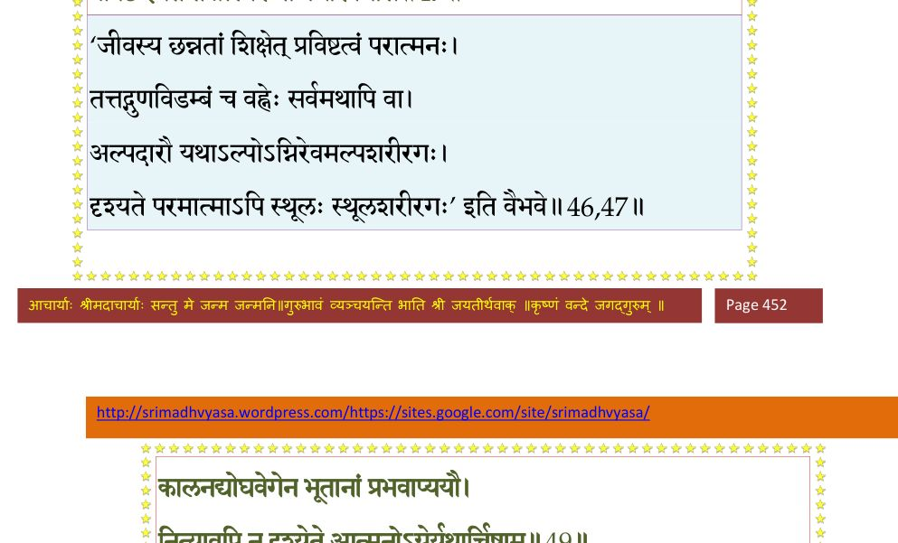
श्लोक ४८
विसर्गाद्याः श्मशानान्ता भावा देहस्य नात्मनः ।
कलानामिव चन्द्रस्य कालेनाव्यक्तवर्त्मना ।। ४८ ।।
कलानामिव चन्द्रस्य कालेनाव्यक्तवर्त्मना ।। ४८ ।।
श्लोक ४९
कालनद्योघवेगेन भूतानां प्रभवाप्ययौ ।
नित्यावपि न दृश्येते आत्मनोऽग्नेर्यथाऽर्चिषाम् ।। ४९ ।।
नित्यावपि न दृश्येते आत्मनोऽग्नेर्यथाऽर्चिषाम् ।। ४९ ।।
भागवततात्पर्यनिर्णय
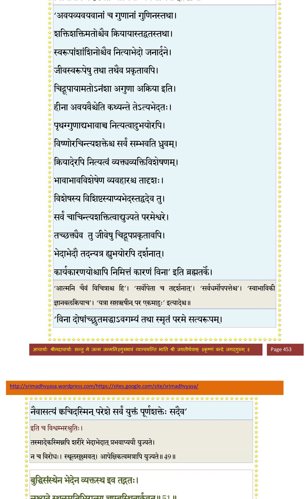
श्लोक ५०
गुणैर्गुणानुपादत्ते यथाकालं विमुञ्चति ।
न तेषु सज्जते योगी गोभिर्गा इव गोपतिः ।। ५० ।।
न तेषु सज्जते योगी गोभिर्गा इव गोपतिः ।। ५० ।।
श्लोक ५१
बुद्धिसंस्थेन भेदेन व्यक्तस्थ इव तद्गतः ।
लक्ष्यते स्थूलमतिभिरात्मा चाम्बुस्थितार्कवत् ।। ५१ ।।
लक्ष्यते स्थूलमतिभिरात्मा चाम्बुस्थितार्कवत् ।। ५१ ।।
भागवततात्पर्यनिर्णय
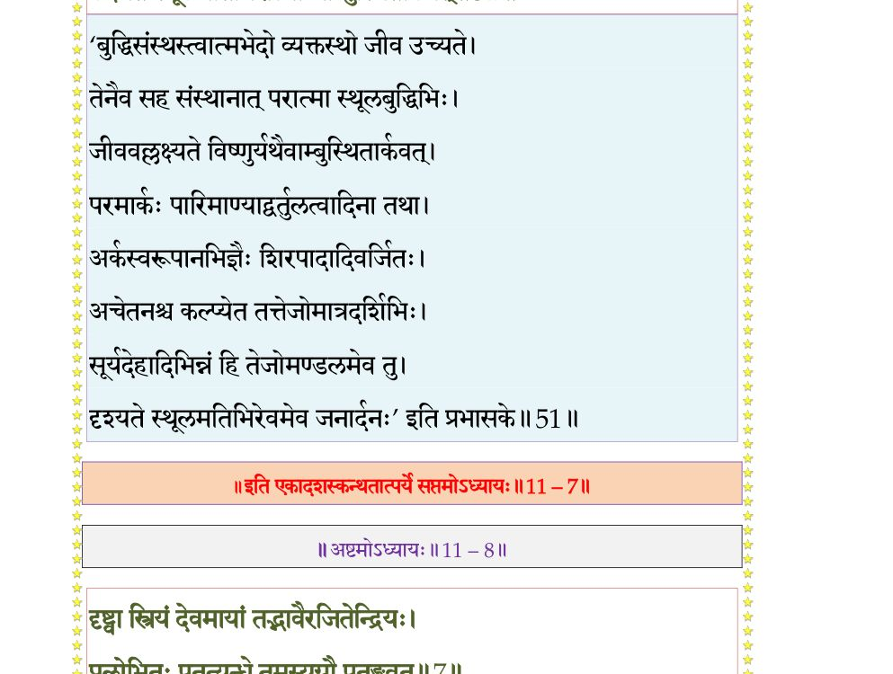
श्लोक ५२
नातिस्नेहः प्रसङ्गो वा कर्तव्यः क्वापि केनचित् ।
कुर्वन् विन्देत सन्तापं कपोत इव दीनधीः ।। ५२ ।।
कुर्वन् विन्देत सन्तापं कपोत इव दीनधीः ।। ५२ ।।
श्लोक ५३
कपोतः कश्चनारण्ये कृतनीडो वनस्पतौ ।
कपोत्या भार्यया सार्धमुवास कतिचित् समाः ।। ५३ ।।
कपोत्या भार्यया सार्धमुवास कतिचित् समाः ।। ५३ ।।
श्लोक ५४
कपोतौ स्नेहगुणितहृदयौ गृहधर्मिणौ ।
दृष्टिं दृष्ट्याऽङ्गमङ्गेन बुद्धिं बुद्ध्या बबन्धतुः ।। ५४ ।।
दृष्टिं दृष्ट्याऽङ्गमङ्गेन बुद्धिं बुद्ध्या बबन्धतुः ।। ५४ ।।
श्लोक ५५
शय्यासनाटनस्थानवार्ताक्रीडाशनादिषु ।
मिथुनीभूय विस्रब्धौ चेरतुर्वनराजिषु ।। ५५ ।।
मिथुनीभूय विस्रब्धौ चेरतुर्वनराजिषु ।। ५५ ।।
श्लोक ५६
यद्यद् वाञ्छति सा राजन् तदर्थमनुकम्पितः ।
तं तं (ततः) समानयत् कामं कृच्छ्रेणाप्यजितेन्द्रियः।। ५६ ।।
तं तं (ततः) समानयत् कामं कृच्छ्रेणाप्यजितेन्द्रियः।। ५६ ।।
श्लोक ५७
कपोती प्रथमं गर्भं गृह्णती काल आगते ।
अण्डानि सुषुवे नीडे स्वपत्युः सन्निधौ सती।। ५७ ।।
अण्डानि सुषुवे नीडे स्वपत्युः सन्निधौ सती।। ५७ ।।
श्लोक ५८
तेषु काले व्यजायन्त रचितावयवा हरेः ।
शक्तिभिर्दुर्विभाव्याभिः कोमलाङ्गतनूरुहा।। ५८ ।।
शक्तिभिर्दुर्विभाव्याभिः कोमलाङ्गतनूरुहा।। ५८ ।।
श्लोक ५९
प्रजाः पुपुषतुः प्रीतौ दम्पती पुत्रवत्सलौ ।
शृण्वन्तौ कूजितं तासां रुवन्तौ कलभाषितैः।। ५९ ।।
शृण्वन्तौ कूजितं तासां रुवन्तौ कलभाषितैः।। ५९ ।।
श्लोक ६०
तासां पतत्रैः सुस्पर्शैः कूजितैर्मुखचेष्टितैः ।
प्रत्युद्गमैरदीनानां पितरौ मुदमापतुः ।। ६० ।।
प्रत्युद्गमैरदीनानां पितरौ मुदमापतुः ।। ६० ।।
श्लोक ६१
स्नेहबद्धानुहृदयावन्योन्यं विष्णुमायया ।
विमोहितौ दीनधियौ शिशून् पुपुषतुः प्रजाः।। ६१ ।।
विमोहितौ दीनधियौ शिशून् पुपुषतुः प्रजाः।। ६१ ।।
श्लोक ६२
एकदा जग्मतुस्तासामशनार्थं कुटुम्बिनौ ।
परितः कानने तस्मिन्नर्थिनौ चेरतुश्चिरम् ।। ६२ ।।
परितः कानने तस्मिन्नर्थिनौ चेरतुश्चिरम् ।। ६२ ।।
श्लोक ६३
दृष्ट्वा तान् लुब्धकः कश्चिद् यदृच्छातो वनेचरः ।
जगृहे जालमातत्य चरतः स्वालयान्तिके ।। ६३ ।।
जगृहे जालमातत्य चरतः स्वालयान्तिके ।। ६३ ।।
श्लोक ६४
कपोतश्च कपोती च प्रजापोषे सदोत्सुकौ ।
गतौ पोषणमादाय स्वनीडमुपजग्मतुः ।। ६४ ।।
गतौ पोषणमादाय स्वनीडमुपजग्मतुः ।। ६४ ।।
श्लोक ६५
कपोती स्वात्मजान् वीक्ष्य बालकान् जालसंवृतान् ।
तानभ्यधावत् क्रोशन्ती क्रोशतो भृशदुःखिता ।। ६५ ।।
तानभ्यधावत् क्रोशन्ती क्रोशतो भृशदुःखिता ।। ६५ ।।
श्लोक ६६
साऽसकृत्स्नेहगुणिता दीनचित्ताऽजमायया ।
स्वयं चाबध्यत शिचा (सिचा) बद्धान् पश्यन्त्यपस्मृतिः ।। ६६ ।।
स्वयं चाबध्यत शिचा (सिचा) बद्धान् पश्यन्त्यपस्मृतिः ।। ६६ ।।
श्लोक ६७
कपोतश्चात्मजान् बद्धानात्मनोऽप्यधिकप्रियान् ।
भार्यां चात्मसमां दीनां विललापातिदुःखितः।। ६७ ।।
भार्यां चात्मसमां दीनां विललापातिदुःखितः।। ६७ ।।
श्लोक ६८
अहो मे पश्यतापायमल्पपुण्यस्य दुर्मतेः ।
अतृप्तस्याकृतार्थस्य गृ(गे)हास्त्रैवर्गिका हताः ।। ६८ ।।
अतृप्तस्याकृतार्थस्य गृ(गे)हास्त्रैवर्गिका हताः ।। ६८ ।।
श्लोक ६९
अनुरूपाऽनुकूला च यस्य मे पतिदेवता ।
शून्ये गृहे मां सन्त्यज्य पुत्रैः स्वर्याति साधुभिः ।। ६९ ।।
शून्ये गृहे मां सन्त्यज्य पुत्रैः स्वर्याति साधुभिः ।। ६९ ।।
श्लोक ७०
सोऽहं शून्यगृहे दीनो मृतदारो मृतप्रजः ।
जिजीविषे किमर्थं वा विदुरो दुःखजीवनः ।। ७० ।।
जिजीविषे किमर्थं वा विदुरो दुःखजीवनः ।। ७० ।।
श्लोक ७१
तांस्तथाऽऽवृतान् शि(सि)ग्भिर्मृत्युग्रस्तान् विचेष्टतः ।
स्वयं च कृपणः शिक्षु पश्यन्नप्यबुधोऽपतत् ।। ७१ ।।
स्वयं च कृपणः शिक्षु पश्यन्नप्यबुधोऽपतत् ।। ७१ ।।
श्लोक ७२
तं लब्ध्वा लुब्धकः क्रूरः कपोतं गृहमेधिनम् ।
कपोतकान् कपोतीं च सिद्धार्थः प्रययौ गृहम्।। ७२ ।।
कपोतकान् कपोतीं च सिद्धार्थः प्रययौ गृहम्।। ७२ ।।
श्लोक ७३
एवं कुटुम्ब्यशान्तात्मा द्वन्द्वारामः पतत्रिवत् ।
पुष्णन् कुटुम्बं कृपणः सानुबन्धोऽवसीदति।। ७३ ।।
पुष्णन् कुटुम्बं कृपणः सानुबन्धोऽवसीदति।। ७३ ।।
श्लोक ७४
यः(यं) प्राप्य मानुषं लोकं मुक्तिद्वारमनावृतम् ।
गृहेषु खगवत् सक्तस्तमारूढच्युतं विदुः।। ७४ ।।
गृहेषु खगवत् सक्तस्तमारूढच्युतं विदुः।। ७४ ।।
।। इति श्रीमद्भागवते एकादशस्कन्धे सप्तमोऽध्यायः ।।